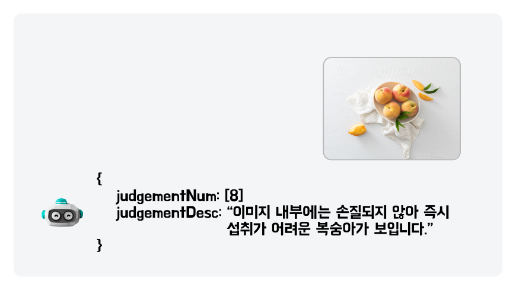

OFFICIAL OUTPUTS / 공개 결과 화면
현업에서는 어떤 결과물을 만들었나요?
완성된 화면에서 입력, 출력, 사람이 확인할 지점을 찾아봅니다.
실제 운영 사례의 공개 응답 / 우아한형제들메뉴 이미지 검수

- 입력 → 결과
- 메뉴 사진과 정책 → 정책 번호와 검수 이유
- 사람의 확인
- 오검수와 예외 정책을 확인하고 기준 수정
- 내 과제로 가져오기
- 뷰티, F&B, 커머스의 가이드 검수나 콘텐츠 분류
공식 기술블로그 원문 ↗
공식 제품 시연 화면 / 삼성SDS FabriX출처를 붙인 리서치

- 입력 → 결과
- 조사 질문 → 요약 답변과 참조 사이트 검색 과정
- 사람의 확인
- 출처의 내용과 최신성을 읽고 제안에 쓸 정보 선택
- 내 과제로 가져오기
- B2B 영업, AX 사업개발, 서비스 기획의 조사 메모
공식 제품 시연 원문 ↗
공식 제품 시연 화면 / 삼성SDS Brity수출 기록의 확인 목록

- 입력 → 결과
- 법령 변경과 수출 기록 → 제품별 영향 확인 표
- 사람의 확인
- 원문, 적용 범위와 실제 조치 여부는 담당자 확인
- 내 과제로 가져오기
- 제조, 무역, 물류의 기준 변경과 기록 대조
공식 제품 시연 원문 ↗
내 직무에 가져갈 것: 입력 하나 → 결과 하나 → 확인 기준 하나
배민은 기업이 공개한 운영 사례입니다. 삼성SDS 두 화면은 공급사의 제품 시연 예시이며 특정 고객사의 실제 프로젝트 성과나 학생 과제 결과가 아닙니다. 내 과제 연결과 사람의 확인 설명은 수업용 적용입니다. 이미지가 열리지 않으면 공식 원문에서 확인하세요. 출처 확인: 2026.10.07.
사전 희망 분야 전체 매칭으로 ↗